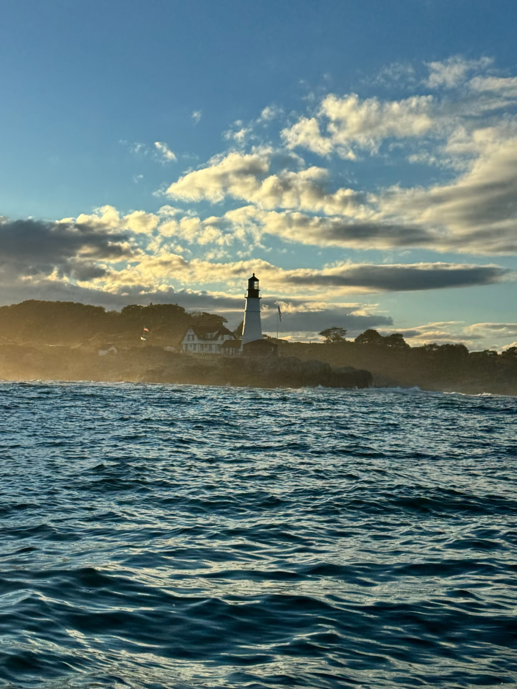
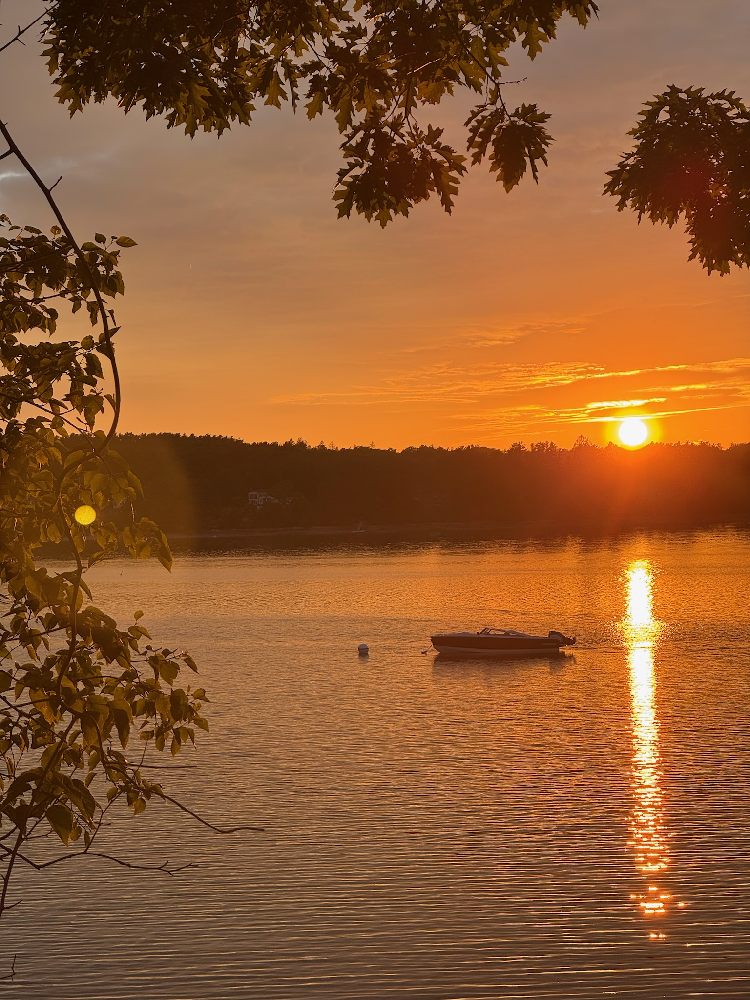
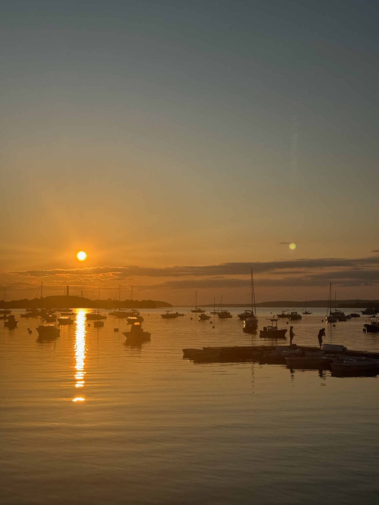
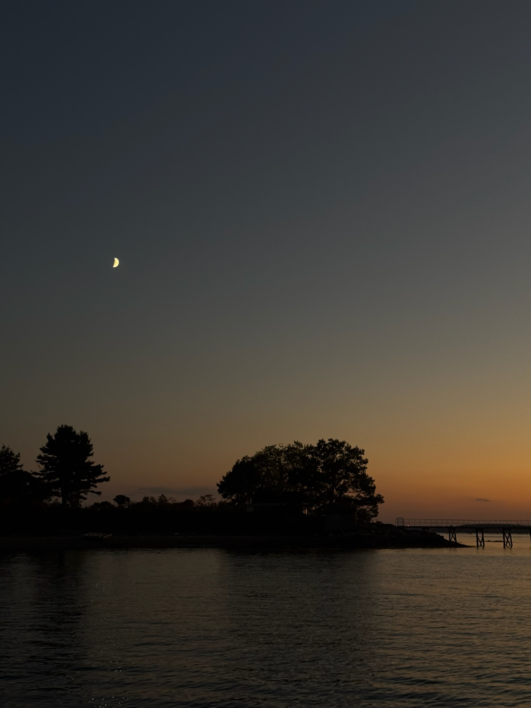
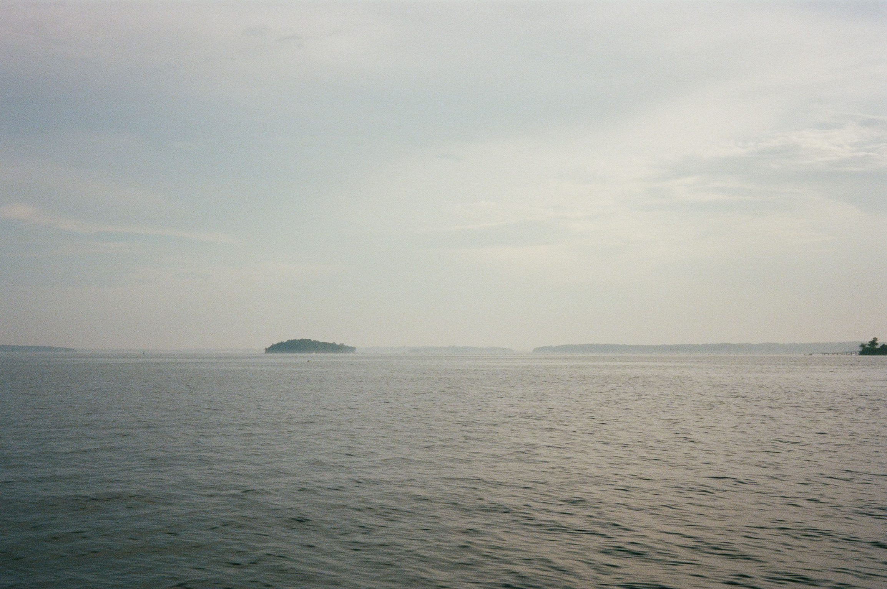

Explore the Bay
Our Cruises
From leisurely sunset sails to adventurous island explorations, find the perfect charter for you.
Explore the Bay
From leisurely sunset sails to adventurous island explorations, find the perfect charter for you.
Choose Your Adventure
We offer two private charter experiences. Choose the one that suits you best. Every cruise is just you, your group, and the open water of Casco Bay.
.jpg)
Experience the beauty of the bay with a local islander on a family boat. Run with us through the archipelago past islands with abundant history of working waterfront, visiting seafarms along the way.
This three-hour adventure takes you on a scenic cruise through the stunning Casco Bay archipelago to a working oyster farm. Spend about an hour cruising out past islands and lighthouses, then dock at the farm for a guided tour where you'll learn about sustainable aquaculture and taste unlimited fresh oysters pulled right from the water. The return cruise offers a different route through the islands, giving you even more of the bay to explore. Drinks are provided throughout the trip.

.jpg)
.jpg)

Settle in for a tranquil evening on the water as the sun dips behind the Portland skyline. We provide drinks and wine while you glide through the calm, sheltered waters of the bay. With the islands silhouetted against golden light and the gentle hum of the engine, this intimate cruise is the perfect way to unwind — whether it's a romantic evening, a celebration with friends, or simply a beautiful night on Casco Bay.


.jpg)
